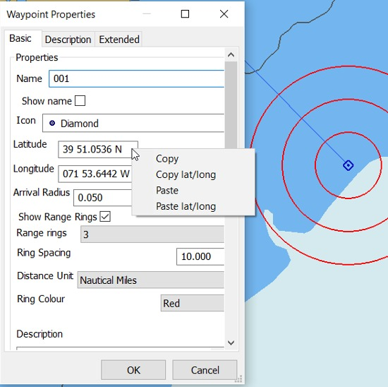
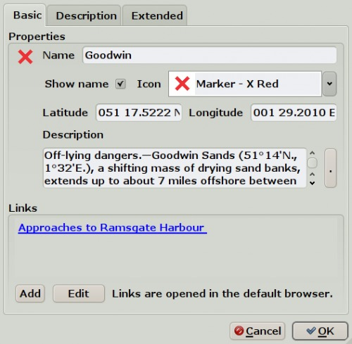
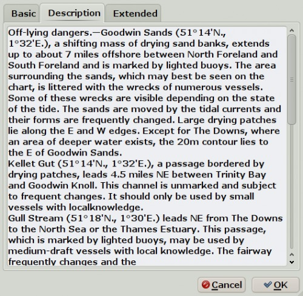
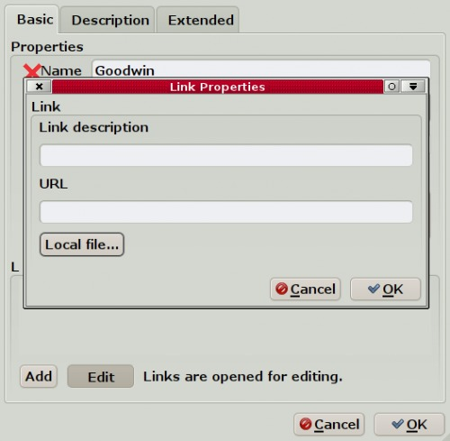
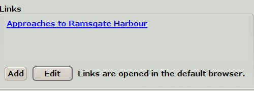
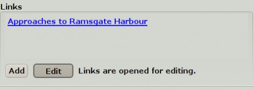
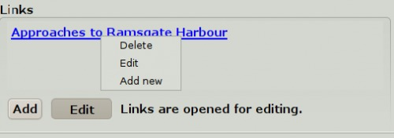
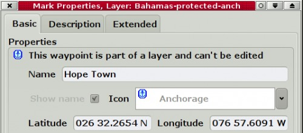

Extended Marks
For the basics of marks see this page: Marks and Routes
The properties of Extended marks described on this page expands the use of marks.
It is now possible, for example, to make a interactive Cruising Pilot.
An extended mark is sometimes called a POI, a point of interest.
The “Mark/WP Properties” looks like this for a default mark.


The dialog is available by double-clicking the mark, in the right-click menu or through the Route Manager.
The Basic tab
- Name: Give the mark a suitable name. This will be visible on the chart, but can be hidden by un-ticking the Show Name box.
- Icon: Change the default icon for the mark. Only the “Name” will be displayed if selecting the “Empty” icon.
- The position of the mark: You can drag the mark with the mouse to the desired position or enter the correct Latitude and Longitude in these fields.
- Right clicking anywhere in the latitude or longitude display gives you the sub dialog shown above. Latitude and longitude can be copied separately or together. A copied lat/long will be available in the paste buffer, and will be displayed if you activate the “Jump to position…” dialog. It is also possible to paste a position. A Paste will try to be smart about parsing the format, and accepts a lot of different syntaxes. Even the GPX <wpt lat=“0.00” long=“0.00”> should work.
- Arrival Radius Read more in Options Setting , where the default is set. The arrival radius can also be set individually for each waypoint.
- Range Rings Show range rings, number of rings, ring spacing, units and color.
- Description: Enter anything about the mark. Long descriptions can be read easier by switching to the Description Tab. See examples below.


Links: Marks can, as an option, have embedded links to the Internet or the the local computer. These are either opened in the default browser or through the default application, for example for pictures or pdf files. For security reasons, the links does not work for launching other programs.
Create a link by pressing Add. Give the link a good description in the new dialog. Enter an Internet address in URL or find a local file through the button Local File..

The new link will appear under Links. Add more links as required.
Edit links by pressing the “Edit” button. The description will change from “Links are opened in the default browser.” to “ Links are opened for editing” when the button is pressed. The color of the “Edit” button gets a grayer shade when it is pressed down. Press once more to release the button. Press once - the button is down. Press again - the button is released and goes up.


Right-click an existing link for a related action menu.

In the illustrated case, the link was to a local JPG picture, that opens in the default program associated with the jpg extension.
If the mark belongs to a Layer, it can't be changed. A warning about this appears above the name of the mark

The Description Tab
This is simply an expanded view of the Description box in the Basic tab.
The Extended Tab
Show on Chart: Untick this box, and the mark will not show on the chart. To make it visible again, use the Route Managers Waypoint Tab. Click the “Icon” column, to the far left, on the line with the waypoint.
GUID is a unique identifier for the mark.